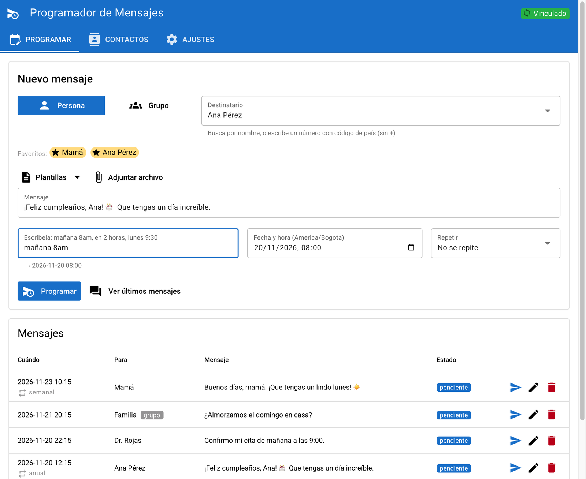
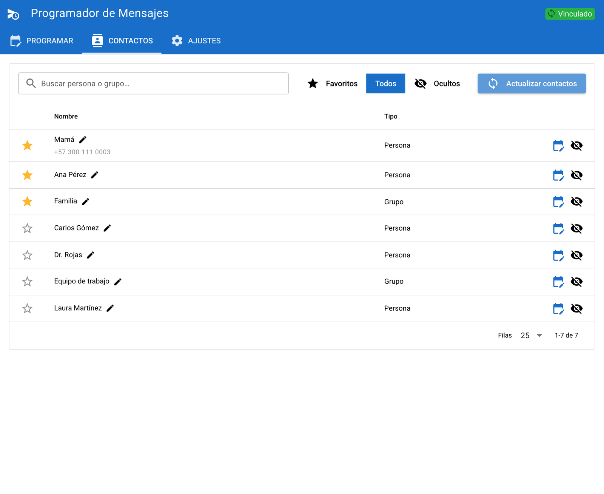

Programa tus mensajes de WhatsApp y olvídate
Una app de escritorio para Mac y Windows que envía tus mensajes a la hora que elijas, desde tu propio número. Todo queda en tu computador: sin nube y sin cuentas.

Hecho para el día a día
Lo justo para programar mensajes sin complicarte.
La hora, como la dirías
Escribe «mañana 8am», «en 2 horas» o «lunes 9:30» y la app lo entiende. También puedes elegir fecha y hora en el calendario.
Mensajes que se repiten
Cada día, semana, mes o año: ideal para cumpleaños y recordatorios. La serie sigue sola.
Plantillas
Guarda los textos que repites y úsalos con un clic.
Fotos y archivos
Adjunta una imagen o un documento (hasta 15 MB); el texto va como pie.
Favoritos y alias
Marca tus contactos favoritos, ponles un alias a los números sin nombre y oculta los chats que no usas.
Siempre en segundo plano
Cierra la ventana y sigue funcionando desde la bandeja. Puede iniciarse con tu computador y te avisa si algo falla.
Tus datos, en tu equipo
No hay servidor ni cuenta. Mensajes, contactos y sesión se guardan solo en tu computador, con copia diaria automática.
Contexto antes de enviar
Mira los últimos mensajes de un chat (solo lectura) antes de programar el tuyo.

Instalar y empezar
Tres pasos. La primera vez el sistema pedirá confirmación porque la app no está firmada.
- Descarga el instaladorElige el de tu sistema en los botones de arriba y ábrelo.
- Vincula tu WhatsAppAbre la app y escanea el código QR desde WhatsApp → Ajustes → Dispositivos vinculados → Vincular dispositivo. La primera carga puede tardar unos minutos: no cierres la sesión ni la app mientras sincroniza.
- Programa tu primer mensajeElige un contacto, escribe el mensaje, indica cuándo enviarlo y pulsa Programar.
🍎 En Mac
- Abre el
.dmgy arrastra la app a Aplicaciones. - Ábrela. macOS dirá «No se abrió…»: pulsa Listo (no «Mover al basurero»).
- Ve a Ajustes del Sistema → Privacidad y seguridad, baja hasta Seguridad y pulsa Abrir de todos modos junto a «Programador de Mensajes». Confirma con tu contraseña o Touch ID. Solo hace falta la primera vez.
- ¿Prefieres Terminal?
xattr -cr "/Applications/Programador de Mensajes.app"y vuelve a abrirla. - En macOS 14 o anterior basta con clic derecho sobre la app → Abrir → Abrir.
🪟 En Windows
- Ejecuta el instalador
.exe. - Si aparece «Windows protegió tu PC»: Más información → Ejecutar de todas formas.
- Necesita Chrome o Edge (Edge ya viene con Windows).
Preguntas frecuentes
¿Cuesta algo?
No. Es gratuita.
¿Qué pasa si mi computador está apagado a la hora del mensaje?
La app debe estar encendida para enviar. Si estuvo apagada y la hora ya pasó por más de 15 minutos, el mensaje queda como «vencido» y no sale solo: tú decides si enviarlo o borrarlo. Con «Iniciar con el sistema» arranca sola al encender el equipo.
¿Mis mensajes y contactos se suben a algún lado?
No. Todo se guarda en tu computador. La app solo se comunica con WhatsApp, como lo hace WhatsApp Web.
¿Puede bloquearme WhatsApp la cuenta?
Esta app usa una librería no oficial que se conecta como WhatsApp Web. Para uso personal y pocos mensajes a contactos que te conocen el riesgo es bajo, pero existe. No la uses para spam ni envíos masivos.
¿Necesito tener Chrome?
Necesita Chrome o Edge. Si no encuentra ninguno, descarga Chrome una sola vez al primer arranque.
¿Cómo la desinstalo?
En Mac, arrastra la app a la papelera. En Windows, desinstálala desde Configuración → Aplicaciones. Para borrar también tus datos, elimina la carpeta «Programador de Mensajes» de ~/Library/Application Support (Mac) o %APPDATA% (Windows).